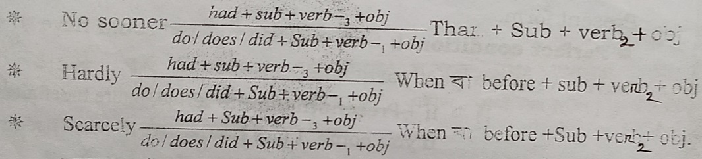

Right form of verb
Rule : 01
কোন Sentence এর মধ্যে always, regularly, sometimes, often, generally, daily, everyday,occasionally, frequently, really, usually, normally, today ইত্যাদি থাকলে present Indefinite tense হয়। এ ছাড়া চিরন্তন সত্য বা অভ্যাসগত Sentence present Indefinite tense হয়।
যেমনঃ A good boy (learn) his lesson Regularly.
= learns.
Rule : 02
বর্তমানে চলছে এমন কোন কাজ বুঝালে এবং Sentence এর মধ্যে now, at this moment, day by day থাকলে Present Continuous tense হয়।
যেমনঃ He (sing) a song now.
= is singing.
Rule : 03
কোন Sentence এর মধ্যে just, just now, already, yet, ever, lately, recently, immediately থাকলে Present Perfect tense হয়।
যেমনঃ He (go) out just now.
= has gone.
Rule : 04
কোন Simple Sentence এ for এর পরে কোন সময়ের উল্লেখ থাকলে Present Perfect Continuous tense হয়।
যেমনঃ He (read) this book for two hours.
= has been reading.
Rule : 05
কোন Sentence এর মধ্যে yesterday, last, ago, long ago, long before. long since, once, formerly, the previous day, it is time, it is high time, wish, fancy থাকলে Past Indefinite tense হয়।
যেমনঃ (i) He (come) home yesterday.
= came.
(ii) I wish I (be) a king.
= were.
Rule : 06
Before বা after এর পর verb থাকলে ing হবে। কিন্তু দুই Sentence এর মাঝে before বা after থাকলে Past Perfect Tense হয়। সেক্ষেত্রে দুই Sentence এর মাঝে before থাকলে আগের Sentence টি Past Perfect Tense হবে। after থাকলে পরের Sentence টি Past Perfect Tense হবে। অন্য Sentence টি Past Indefinite tense হবে।
যেমনঃ (i) After (receive) the news, he went to Dhaka.
= receiving.
(ii) The patient (die) before the doctor came.
= had died.
Rule : 06 এর অতিরিক্ত অংশ
এই নিয়ম (before/after) এর একটি Sentence Present Indefinite হলে অন্য Sentence টি Present Perfect হবে। আবার একটি Sentence Past Indefinite হলে অন্য Sentence টি Past Perfect হবে। আবার একটি Sentence Future Indefinite হলে অন্য Sentence টি Future Perfect হবে।
যেমনঃ (i) He goes home after he (finish) the work.
= has finished.
(ii) He (complete) his study before he ate rice.
= had completed.
(iii) He (wear) college dress before he will go to college.
= will have worn.
Rule : 07
কোন Sentence এর মধ্যে tomorrow, the next day/week/month/year, the following day/week/month/year থাকলে Future Indefinite tense হবে।
যেমনঃ He (come) home tomorrow.
= will come.
Rule : 07 এর অতিরিক্ত অংশ
***(a) Complex Sentence এর ক্ষেত্রে একটি Sentence Present tense হলে অন্য Sentence টি Present tense হবে (তবে ক্ষেত্র বিশেষ অর্থ অনুসারে বা relative pronoun এর ক্ষেত্রে past হতে পারে)। কিন্তু একটি Sentence Past Indefinite হলে অন্য Sentence টি Past হবে (তবে ঐ Sentence এর কাজ চলমান বা ঐ সময়ে চলিতেছে বুঝালে Past Continuous Tense হবে)।
যেমনঃ (i) When he came here, he (become) hungry.
= became.
(ii) When i saw him, he (read) newspaper.
= was reading.
(iii) When i saw him, he (drive) a car.
= was driving.
(iv) As he works heard, he (become) rich.
= becomes.
(v) He said that he (go) home the nextday.
= would go.
(vi) He said that he already (finish) the work.
= had done.
***(b) Complex Sentence এর মত দুইটি Sentence দেওয়া আছে কিন্তু কোন Conjunction নেই । এরূপ থাকলে ঐ Sentence টি Simple Sentence হবে । এবং bracket এর মধ্যকার verb এর সাথে ing যোগ করতে হবে ।
যেমনঃ (i) The game (be) over, we went home.
= being.
(ii) The sun (set) , we reached there.
= having set.
***(c) Compound sentence এর ক্ষেত্রে and, but, or বা কমা এর পরে verb থাকলে আগের verb যে অবস্থায় আছে, পরের verb সেই অবস্থায় বসবে । অর্থাৎ আগের verb present হলে পরের verb present হবে, আগের verb past হলে পরের verb past হবে, আগের verb এর সাথে ing থাকলে পরের verb এর সাথে ing হবে ।
যেমনঃ (i) He come, stayed and (enjoy).
= enjoyed.
(ii) He saw the police and (ran) away.
= ran.
Rule : 08
কোন Sentence এর মধ্যে shall, should, will, would, can, could, may, might, must, ought to, use to, do not, does not, did not, am to, is to, are to, was to, were to, have to, has to, had to, had better, had rather, would better, would rather, let, need,dare, can not but, could not but, nothing but, anything but এর পরে verb এর present form বসে ।
কিন্তু (passive voice হলে) Shall be, Should be, will be, would be, can be could be, may be, might be, must be, ought to be, use to be, going to be, being, having, to be, এর পরে verb এর past participle হয়।
*** কখনো কখনো অর্থ অনুসারে be এর পরে adjective বসে ।
যেমনঃ (i) You should (respect) your parents.
= respect.
(ii) A letter must be (write).
= written.
Rule : 09
Mind, worth, without, past, can not help, could not help এবং যে কোন Preposition এর পরে verb এর সাথে ing হয় (*** to ছাড়া)।
Preposition: in, (to), into, up, on, upon, of, by, at, for, from, with, out, without, round, around, after, about, against, before, behind, beyond, between, down, towards, throuht, over, past, beside, among, during, regarding.
সকল to এর পরে verb এর Present form হয় । কিন্তু with a view to, look forward to, addicted to, devoted to, (am, is, are, was, were, get, got) used to এর পরে verb এর সাথে ing হয়।
যেমনঃ (i) He prevented the boy from (tell) lies.
= telling.
(ii) He went to market to (buy) a shirt.
= buy.
(iii) He went to market with a view to (buy) a shirt.
= buying.
Rule : 10
কোন Simple Sentence বা একই Sentence এ দুটি verb থাকলে শেষের verb এর সাথে ing যোগ করতে হয় । কিন্তু ঐ Sentence দ্বরা উদ্দেশ্য বুঝালে শেষের verb এর সাথে ing না বসিয়ে আগে to বসাতে হবে।
যেমনঃ (i) I saw him (go).
= going.
(ii) He went to Dhaka (buy) a television.
= to buy.
* Want, need, try, begin, start, wish, hope, decide, manage এবং যে কোন adjective এর পরে to থাকলে পরের শব্দটি অবশ্যই verb এর present form হবে। পরে verb বসলে সেই verb এর আগে to বসাতে হবে।
যেমনঃ (i) He wants (go) home.
= to go.
(ii) They wish to (finishing) the work.
= finish.
(iii) He is interested to (going) there.
= go.
Rule : 10 এর অতিরিক্ত অংশ
*** Causitive verb : have, has, had, get, got, find, found এর পরে ব্যক্তি বাচক object থাকলে অতিরিক্ত verb এর সাথে ing হবে। তবে এর পরে বস্তু বাচক object থাকলে অতিরিক্ত verb এর past participle হবে।
যেমনঃ (i) I found him (work) in the field.
= working.
(ii) I got the car (break) on the road.
= broken.
(iii) I have my rice (cook).
= cooked.
Rule : 11
Since দুই Sentence এর মাঝে বসবে এবং “সময় হয়ে গেছে” বা “সময় অতিক্রানত হয়েছে” এমন অর্থ প্রকাশ করলে নিচের নিয়ম অনুযায়ী হবে।
** Since এর প্রথম Sentence Present tense (present indefinite বা present perfect) হলে পরের Sentence past Indefinite tense হবে।
যেমনঃ (i) It is many years since I (come) to Dhaka.
= came.
(ii) Many years habe passed since his father (die).
= died.
** কিন্তু Since এর প্রথম Sentence past indefinite হলে পরের Sentence past perfect tense হবে।
যেমনঃ (i) It was many years since they firs (meet).
= had met.
(ii) It was long since I (see) her last.
= had seen.
** এ ছাড়া Since (as, when, because) যেহেতু বা কারণ অর্থ প্রকাশ করলে Complex sentence হয়। তখন এর একটি অংশ past হলে অন্য অংশটি past হবে। তবে একটি অংশ Present হলে অন্য অংশটি অর্থ অনুসারে past বা present হতে পারে।
যেমনঃ (i) Since I was ill, I (miss) an important class.
= missed.
** as if, as though এর অর্থ “যেন” এরা দুই Sentence এর মাঝে বসে, এবং since এর মতই পরিবর্তন হয় । অর্থাৎ as though, as if, এর প্রথম অংশ present tence হলে পরের অংশ past indefinite হবে। আবার, as though, as if এর প্রথম অংশ past indefinite হলে পরের অংশ past perfect tense হবে।
Rule : 12
** Past Conditional : Sub + would বা could বা might + verb এর present form.
** Perfect Conditional : Sub + Would have বা could have বা might have + verb এর past participle.
যেমনঃ (i) *If + Present Indefinite, Future Indefinite.
If you come, I (go) home.
= will go.
(ii) If + Past Indefinite, Past Conditional.
If you came, I (go) home.
= would go.
(iii) If + Past perfect, perfect Conditional.
If you had come, I (go) home.
= would have gone.
এই নিয়মটি অন্যভাবে করা যায়, অর্থাৎ If বাদ দিয়ে প্রথমে Had বসে, Sentence এর বাকী অংশ আগের মতই থাকে।
যেমনঃ (i) Had you come, I (go) home.
= would have gone.
Rule : 13
Preposition ও তার পরের অংশ, adjective, adverb কোন verb এর subject হতে পারে না। Preposition এবং as well as যুক্ত subject থাকলে Preposition এর আগের অংশকে মুল subject মনে করতে হবে এবং সেই অনুসারে verb এর পরিবর্তন করতে হবে।
যেমনঃ (i) The colour of his eyes (be) blue.
= is.
Rule : 13 এর অতিরিক্ত অংশ
*** (i) Adjective সব সময় singular. কিন্তু এরা subject হিসেবে ব্যবহৃত হতে পারে না। কিছু কিছু adjective এর আগে the বসিয়ে subject করা হয়। তখন এরা plural subject হয় এবং এদের পরে plural verb বসে।
যেমনঃ the poor, the rich, the pious, the virtuous, the coward, the wise, the brave, the honest, the unfed, the idle, the industrious, the ignorant
এর পরে plural verb বসে। অর্থাৎ (be) থাকলে are হবে। তবে sentence টি past থাকলে be এর পরিবর্তে were হবে।
*** (ii) There বা Here হল Adverb এরা subject হতে পারে না। অর্থাৎ এদের উপর নির্ভর করে verb বসতে পারে না। There বা Here এর পরে verb থাকলে ঐ verb পরের শব্দ অনুসারে verb বসবে।
গঠন ঃ There + verb + subject.
যেমনঃ (i) There (be) a pen on the table.
= is.
(ii) Here (be) a mobile.
= is.
(iii) There (be) manythings on the table.
= are.
Rule : 14
While এর পরেই verb থাকলে ing হবে। কিন্তু while এর পরে subject থাকলে past Continuous tense হবে। অর্থাৎ subject এর পর was/were বসবে এবং মুল verb এর সাথে ing বসবে।
যেমনঃ (i) While (walk) in the garden, I swa many flowers.
= walking.
(ii) While I (walk) in the garden, I swa many flowers.
= was walking.
Rule : 15

যেমনঃ (i) No sooner had he seen the police than he ran away.
(ii) Hardly had he seen the police when he ran away.
(iii) Scarcely had he seen the police when he ran away.
Rule : 15 এর অতিরিক্ত অংশ
As soon as ________ , ________. এই নিয়মে দুটি Sentence past indefinite হবে।
Rule : 16
astonish, concern, delight, deprive, fascinate, frighten, interest, locate, shock, situate, suppose, surprise, alarm, engage, disappoint.
উপরের verb গুলি ব্রাকেট এর মধ্যে থাকলে past participle করতে হবে এবং এই verb এর আগে tense অনুসারে am/is/are/was বসাতে হবে।
Rule : 17
Either......or....... , Neither.......nor........ , Not only.....but also...... এরা দুইটি subject কে যুক্ত করে। কিন্তু এদের পরে verb বসবে শেষের subject অনুসারে ।
যেমনঃ (i) Either he or his brothers (be) guilty.
= are.
(ii) Neither he nor I (be) present.
= am.
Rule : 18
Lest এর পর subject + should/might + verb এর present form বসে। So......that এর পরে subject + can not/ could not + verb এর present form বসে। So that এর পরে subject + can/may বা could/might + verb এর present form বসে।
যেমনঃ (i) He ran away lest the police (catch) him.
= should catch.
(ii) He is so weak that he (not walk).
= can not walk.
(iii) He went to market so that he (buy) a shirt.
= could buy.
Rule : 19
নির্দিষ্ট দৈর্ঘ্য, প্রস্থ, উচ্চতা, পরিমান, দূরত্ব Subject হিসেবে থাকলে এরা দেখতে plural হলেও এর singular এবং এদের পরে singular verb বসবে।
যেমনঃ (i) Fifty miles (be) a long distance.
= is.
(ii) Ten thousand taka (be) a big amount.
= is.
Rule : 20
Relative pronoun (who, which, that) এর পূর্বে মিলবাচক শব্দ(ব্যক্তি, শিশু, ইতর প্রাণী) থাকলে এবং এই মিলবাচক শব্দকে Subject ধরে who, which, that এর পরে verb বসাতে হবে। এই subject singular হলে verb singular হবে। আবার Subject plural হলে verb plural হবে। এই verb passive হতে পারে।
যেমনঃ (i) It is I who (be) present.
= am.
(ii) I bought some gifts which (be) costly.
= were.
(iii) It is he who (be) honest.
= is.
Rule : 21
পদবী বাচক শব্দ (যেমনঃ Chairman, member, principle) এর পূর্বে the সহ Subject হিসেবে বসলে উহাকে subject মনে করতে হবে এবং সেই হিসেবে verb বসবে। তবে পদবী বাচক শব্দের পূর্বে the না থাকলে তাকে subject হিসেবে ধরা যাবে না।
যেমনঃ (i) The chairman and member (be) absent in the meeting.
= is/was.
(ii) The member and the chairman (be) present.
= are.
Rule : 22
Gerund (verb+ing), infinitive(to + verb), verbal noun(the + v), noun clause(what/that + sub + verb) Subject হিসেবে থাকলে verb singular হবে।
যেমনঃ (i) To tell a lie (be) a great sin.
= is.
(ii) The work (be) very hard.
= is.
Rule : 23
Slow and steady(ধীর-স্থির), Bread and butter(নানরুটি), Trade and commerce(ব্যবসা-বানিজ্য) জোড়া শব্দ হলেও এরা singular এবং এদের পরে singular verb বসে।
যেমনঃ (i) Slow and steady (win) the race.
= wins.
(ii) Bread and butter (be) my break fast.
= is.
Rule : 24
3 Person (1st, 2nd, 3rd) এর তিনটি মূল Subject (I, You, he) একত্রে বসলে 231 (2nd, 3rd, 1st) অনুসারে বসবে। তবে এরা কোন দোষ করলে 123(1st, 2nd, 3rd) অনুসারে বসবে এবং verb plural হবে।
যেমনঃ (i) You, he and I (be) persent in the meeting.
= are.
(ii) I, you and he (be) guilty for this case.
= are.